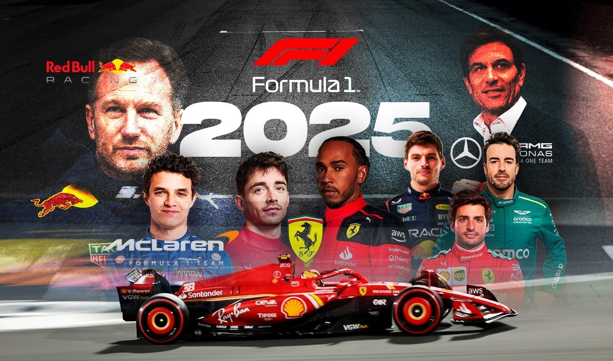

La temporada 2025 de la Fórmula 1 está dejando huella con momentos épicos, batallas ajustadas y sorpresas que nadie esperaba. Entre nuevos ajustes, equipos renovados y jóvenes talentos, esta edición promete ser recordada por los aficionados.
En este momento el lider está siendo Oscar Piastri, que por sorpresa para Lando Norris, está teniendo mayor puntaje que él en el leatherboard. Pero no hay que olvidarse de Max Verstappen, que sigue al acecho y busca proclamarse como campeón otra vez. Además, debutantes como Kimi Antonelli y Oliver Bearman suman emoción a la grilla.
Red Bull mantiene su potencia gracias a Max, pero McLaren ha dominado totalmente la grilla con sus dos super-autos. El segundo puesto estará peleado entre Mercedes, Ferrari, con el fichaje de Hamilton, y Red Bull.
El GP de Canadá fue uno de los puntos altos del año con lluvia, incidentes y un podio inesperado. Además, el calendario renovado con el regreso de circuitos históricos trajo desafíos distintos para las escuderías.